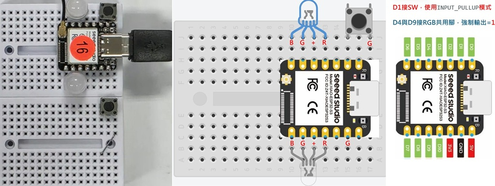

😃 XIAO ESP32 S3 + SW + 共陽 RGB LED + MQTT 一鍵燒錄
👍 新北市泰山高中電子科陳致中老師教學專用
按鈕開關 SW 接 D1，按下則 兩顆 LED 三顏色依序點亮
RGB LED 分別接 D3.4.5.6 與 D10.9.8.7，其中 D4.9 用程式設為 HIGH 電位
註1：範例使用的 Wi-Fi 帳/密為 TSSH/12345678
註2：MQTT Server=mqttgo.io ， 主題 974622/LED=ON 則兩顆 LED 三顏色依序點亮

請使用 Chrome 瀏覽器並連接您的開發板